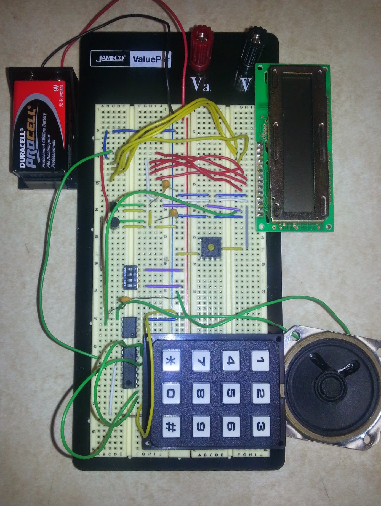
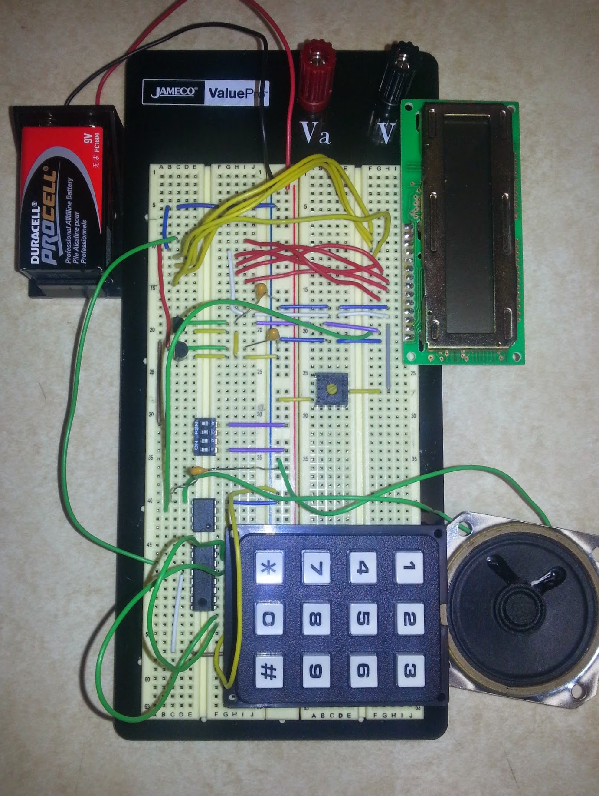

PORTFOLIO

Active Directory Migration

Microcontrollers Final Project
I'm a Kansas State University graduate with relevant job experience looking for a Systems Administrator job. I am experienced in all major platforms, including Linux, Windows, and OS X. I also have experience managing servers in a datacenter environment.
Kansas State University
Ward Parkway Presbyterian Church
Technologies used: Windows 7, pfSense, Netgear GS728TP, Ubiquiti EdgeRouter Lite, EnGenius EAP600
K-State Computing and Information Sciences
Linux/Unix Technologies used: Ubuntu/Debian, Ganiti, KVM, Icinga (fork of Nagios), CFEngine, PXE boot, TFTP, SSH, NFS, Samba, Python, Shell Scripts, OS X
Windows Technologies used: Windows(7, Server 2003-2012R2), Active Directory, WSUS, Sysprep, ImageX, WAIK
Payless ShoeSource
Technologies used: Windows 7, ServiceNow, Outlook (Office365)
K-State Admissions Office, Anderson Hall
Technologies used: Windows (XP, 7), Windows AIK, Spiceworks, Batch Scripting, ImageNow, Talisma
Active Directory
Windows Server
LDAP
OS X
Ubuntu/Debian Linux
Scripting (Batch, Powershell,..)
Active Directory Migration

Microcontrollers Final Project
Created by BLACKTIE.CO